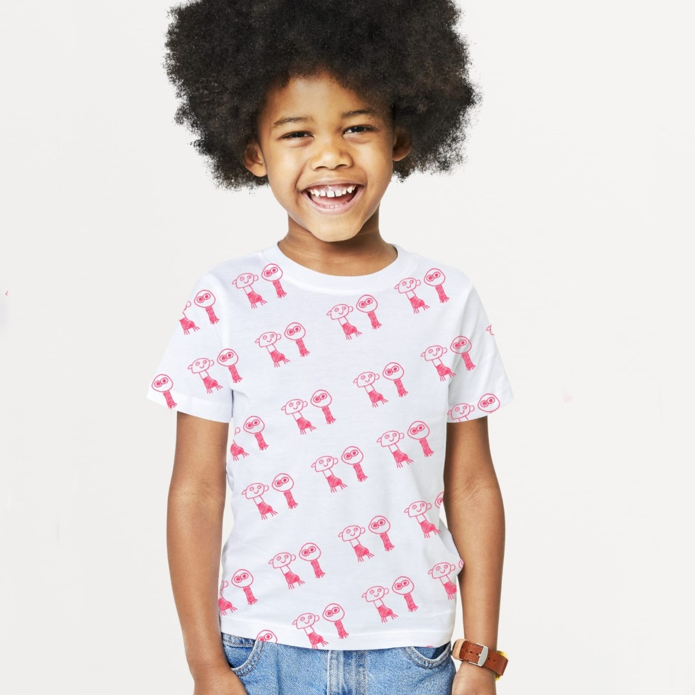
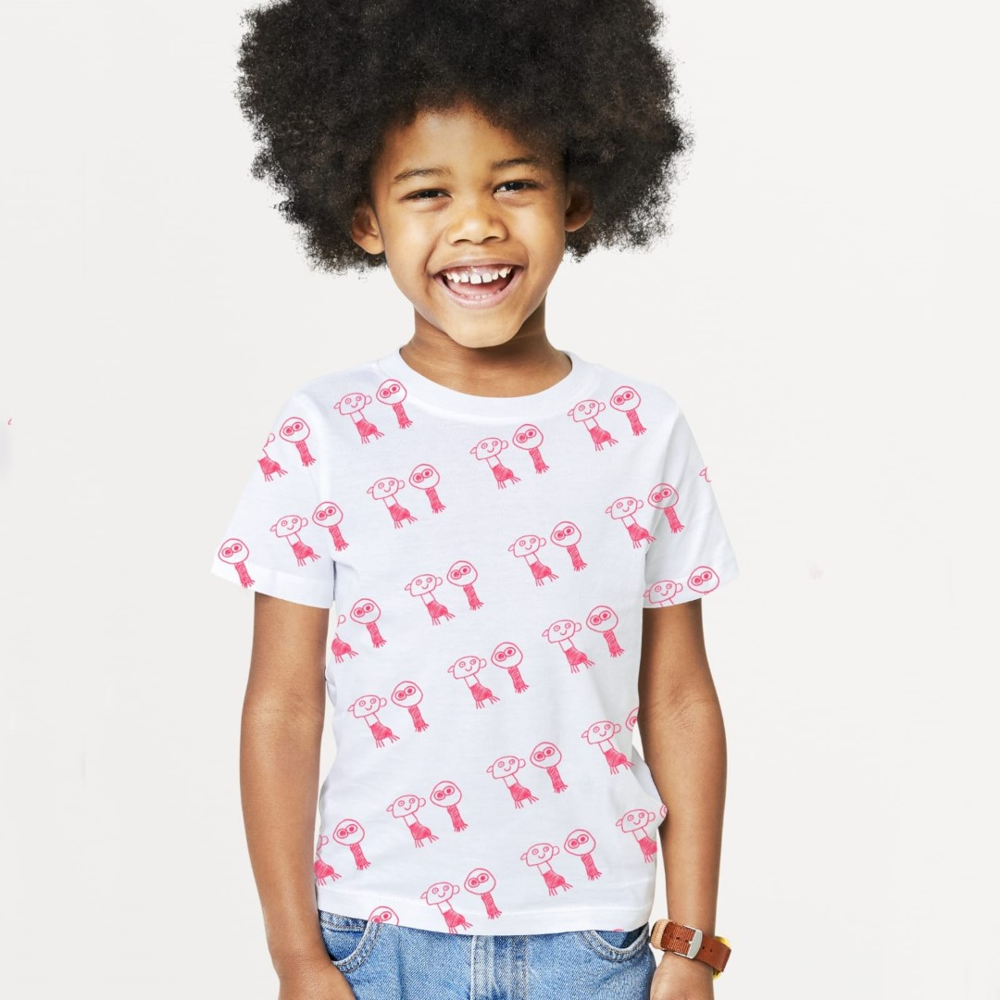

Modern Metal Formulations from Children's Drawings and Expressions
Summary
The study explores the use of children's drawings and expressions as a basis for the development of modern metal compositions. It discusses the significance of analyzing children's drawings in order to innovate new materials and technologies. The study also delves into the importance of understanding children's expressions in the development of innovative metal compositions. Additionally, it highlights the potential of utilizing children's expressions to enhance the understanding of metal compositions and materials. Overall, the study emphasizes the value of incorporating children's perspectives in the development of modern metal compositions.
Results
The study highlights the potential of utilizing children's drawings and expressions as a basis for the development of modern metal compositions. It emphasizes the importance of analyzing children's drawings to innovate new materials and technologies. The study also emphasizes the significance of understanding children's expressions in the development of innovative metal compositions. Additionally, it highlights the potential of utilizing children's expressions to enhance the understanding of metal compositions and materials.
Recommendations
The study recommends that researchers and practitioners in the field of metalworking should consider incorporating children's perspectives in the development of modern metal compositions. It also suggests that further research should be conducted to explore the potential of utilizing children's expressions in the development of innovative metal compositions.
Personal Opinion
The study "Modern Metal Formulations from Children's Drawings and Expressions" presents a fascinating approach to material development by incorporating the creative expressions of children. It underscores the value of considering unconventional sources of inspiration in the field of metalworking. By recognizing the potential of children's drawings and expressions, this study opens up new avenues for innovation and creativity in material science. It encourages a shift towards more inclusive and diverse perspectives in the development of modern metal compositions. This approach not only enriches the creative process but also has the potential to lead to the discovery of novel and unexpected material properties. Overall, this study serves as a thought-provoking exploration of the intersection between art, creativity, and material science.

 
